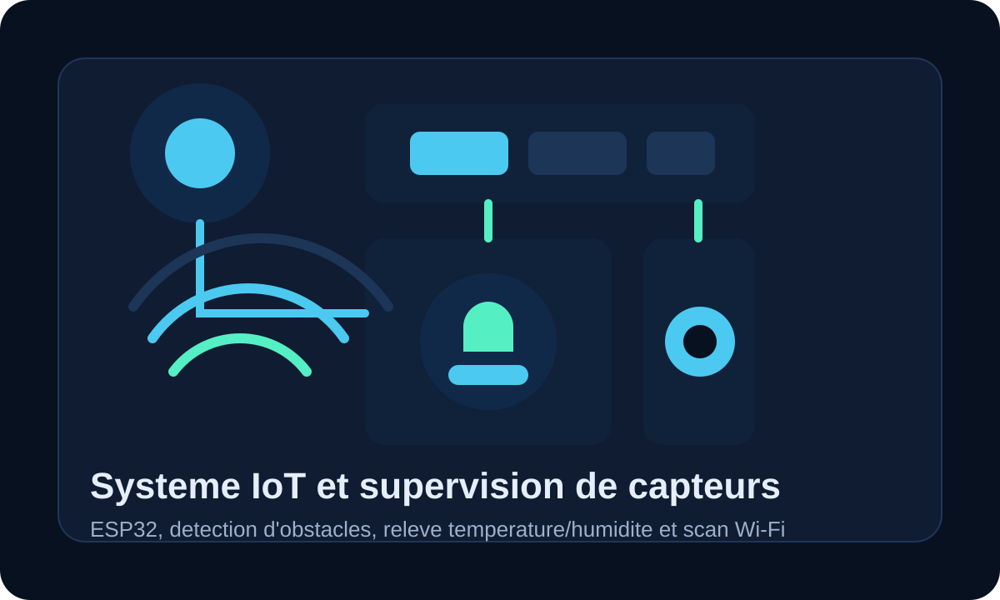

IoT & embarque
Systemes IoT avec ESP32, capteurs et scan Wi-Fi
Ensemble de mini-projets embarques autour de la detection d'obstacles, des mesures temperature/humidite et du scan de reseaux Wi-Fi.
Cette partie montre une ouverture vers les systemes connectes, la manipulation de capteurs et la collecte de donnees avec ESP32 et Arduino.
ESP32
Arduino
DHT11
Wi-Fi
